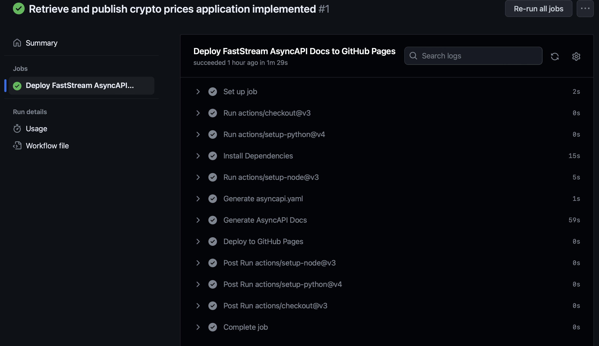
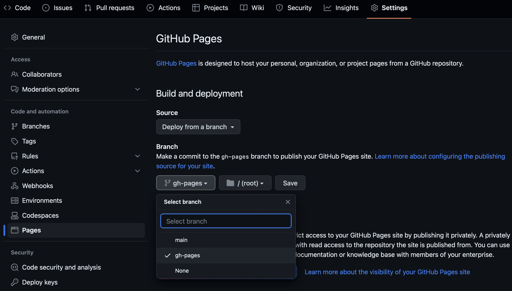

Cryptocurrency analysis with FastStream¤
In this tutorial, we will walk you through the process of using the
faststream-gen Python library to retrieve cryptocurrency prices in
real time and calculate their moving average. To accomplish that, we
will generate following two
FastStream
applications:
-
A microservice retrieving current cryptocurrency prices from an external web service and publishing retrieved data to a Kafka topic.
-
A microservice consuming such messages, calculating the moving average price for each cryptocurrency and publishing it to another Kafka topic.
You can watch a short version of the tutorial in the video below:
Let’s get started!
Installation¤
To complete this tutorial, you will need the following software and Python library:
-
Python (version 3.8 and upward)
-
a valid OPENAI API key
-
[optional] github account and installed git command
It is recommended to use a virtual environment for your Python projects. Virtual environments are a common and effective Python development technique that helps to keep dependencies required by different projects separate by creating isolated Python environments for them.
In this tutorial, we will be using Python’s venv module to create a virtual environment.
First, create a root directory for this tutorial. Navigate to the
desired location and create a new directory called
faststream_gen_tutorial and enter it.
mkdir faststream_gen_tutorial
cd faststream_gen_tutorial
Creating and activating a new Python virtual environment¤
Create a new virtual environment using venv:
python3 -m venv venv
Next, activate your new virtual environment:
source venv/bin/activate
Installing the packages¤
Upgrade pip if needed and install faststream-gen package:
pip install --upgrade pip && pip install faststream-gen
Check that the installation was successful by running the following command:
faststream_gen --help
You should see the full list of options of the command in the output.
Now you have successfully set up the environment and installed the
faststream-gen package.
Setting up OpenAI API key¤
faststream-gen uses OpenAI API and you need to export your API key in
environment variable OPENAI_API_KEY. If you use bash or compatible
shell, you can do that with the following command:
export OPENAI_API_KEY="sk-your-openai-api-key"
If you don’t already have OPENAI_API_KEY, you can create one
here.
Generating FastStream applications¤
Retrieving and publishing crypto prices¤
Now, we will create an application which retrieves information about current cryptocurrency prices from an external web service and publishes messages to a Kafka topic. In order to achieve this, we need to provide a high-level description of the application in plain English containing only the necessary information needed by a knowledgeable Python developer familiar with FastStream framework to implement it. This should include details such as the message schema, instructions on external API-s and web service, and guidance on selecting the appropriate topic and partition keys.
Below is an example of such description used in this particular case. Notice that we did not specify steps needed to actually implement, we specified what the service should do, but not how to do it.
Create a FastStream application which will retrieve the current cryptocurrency
price and publish it to new_crypto_price topic.
The application should retrieve the data every 2 seconds.
A message which will be produced is JSON with the two attributes:
- price: non-negative float (current price of cryptocurrency in USD)
- crypto_currency: string (the cryptocurrency e.g. BTC, ETH...)
The current price of Bitcoin can be retrieved by a simple GET request to:
- https://api.coinbase.com/v2/prices/BTC-USD/spot
The current price of Ethereum can be retrieved by a simple GET request to:
- https://api.coinbase.com/v2/prices/ETH-USD/spot
The response of this GET request is a JSON and you can get information about
the crypto_currency in:
response['data']['base']
and the information about the price in:
response['data']['amount']
Use utf-8 encoded crypto_currency attribute as a partition key when publishing
the message to new_crypto_price topic.
Let’s generate a new FastStream project inside the
retrieve-publish-crypto directory. First, copy the previous
description and paste it into a file called
description_retrieve_publish.txt.
Next, run the following command (parameter -i specifies the file path
for the app description file, while the parameter -o specifies the
directory where the generated project files will be saved):
faststream_gen -i description_retrieve_publish.txt -o retrieve-publish-crypto
✨ Generating a new FastStream application!
✔ Application description validated.
✔ FastStream app skeleton code generated.
✔ The app and the tests are generated.
✔ New FastStream project created.
✔ Integration tests were successfully completed.
Tokens used: 36938
Total Cost (USD): $0.11436
✨ All files were successfully generated!
Failed generation¤
The generation process is not bullet proof and it could fail with a meesage like this:
✨ Generating a new FastStream application!
✔ Application description validated.
✔ New FastStream project created.
✔ FastStream app skeleton code generated.
✘ Error: Failed to generate a valid application and test code.
✘ Error: Integration tests failed.
Tokens used: 79384
Total Cost (USD): $0.24567
Apologies, we couldn't generate a working application and test code from your application description.
Please run the following command to start manual debugging:
cd retrieve_without_logs && pytest
For in-depth debugging, check the retrieve-publish-crypto/_faststream_gen_logs directory for complete logs, including individual step information.
There can be a number of reasons for that, the most common being:
-
The specification you provided was not sufficiently detailed to generate the application. In such cases, you could try to add more detailed instructions and try again.
-
The task is too difficult for default GPT-3.5 model to handle and you could try to use GPT-4 instead:
faststream_gen --model gpt-4 -i description_retrieve_publish.txt -o retrieve-publish-crypto
- You were unlucky and you just need to execute the command again. Large language models are stohastic in their nature and they always give different answers to the same questions. There are retry mechanisms in the engine, but sometimes they are not enough and just rerunning the command can mediate the problem.
If none of the above strategies work, check the already generated files and look what the potential problem could be. You can also finish the implementation or tests yourself.
Successful generation¤
If successful, the command will generate FastStream project with the
following structure:
retrieve-publish-crypto
├── .github
│ └── workflows
│ ├── build_docker.yml
│ ├── deploy_docs.yml
│ └── test.yml
├── .gitignore
├── Dockerfile
├── LICENSE
├── README.md
├── app
│ └── application.py
├── pyproject.toml
├── scripts
│ ├── build_docker.sh
│ ├── lint.sh
│ ├── services.yml
│ ├── start_kafka_broker_locally.sh
│ ├── static-analysis.sh
│ ├── stop_kafka_broker_locally.sh
│ └── subscribe_to_kafka_broker_locally.sh
└── tests
├── __init__.py
└── test_application.py
The generated application is located in the app/ directory, while the
tests are located in the tests/ directory. It is important to keep in
mind that these files are generated by LLM and may vary with each
generation.
app/application.py:
import asyncio
import json
from datetime import datetime
import aiohttp
from pydantic import BaseModel, Field, NonNegativeFloat
from faststream import ContextRepo, FastStream, Logger
from faststream.kafka import KafkaBroker
broker = KafkaBroker("localhost:9092")
app = FastStream(broker)
class CryptoPrice(BaseModel):
price: NonNegativeFloat = Field(
..., examples=[50000.0], description="Current price of cryptocurrency in USD"
)
crypto_currency: str = Field(
..., examples=["BTC"], description="The cryptocurrency"
)
publisher = broker.publisher("new_crypto_price")
async def fetch_crypto_price(
url: str, crypto_currency: str, logger: Logger, context: ContextRepo, time_interval: int = 2
) -> None:
# Always use context: ContextRepo for storing app_is_running variable
while context.get("app_is_running"):
async with aiohttp.ClientSession() as session:
async with session.get(url) as response:
if response.status == 200:
data = await response.json()
price = data["data"]["amount"]
new_crypto_price = CryptoPrice(
price=price, crypto_currency=crypto_currency
)
await publisher.publish(
new_crypto_price,
key=crypto_currency.encode("utf-8"),
)
else:
logger.warning(
f"Failed API request {url} at time {datetime.now()}"
)
await asyncio.sleep(time_interval)
@app.on_startup
async def app_setup(context: ContextRepo):
context.set_global("app_is_running", True)
@app.on_shutdown
async def shutdown(context: ContextRepo):
context.set_global("app_is_running", False)
# Get all the running tasks and wait them to finish
fetch_tasks = context.get("fetch_tasks")
await asyncio.gather(*fetch_tasks)
@app.after_startup
async def publish_crypto_price(logger: Logger, context: ContextRepo):
logger.info("Starting publishing:")
cryptocurrencies = [("Bitcoin", "BTC"), ("Ethereum", "ETH")]
fetch_tasks = [
asyncio.create_task(
fetch_crypto_price(
f"https://api.coinbase.com/v2/prices/{crypto_currency}-USD/spot",
crypto_currency,
logger,
context,
)
)
for _, crypto_currency in cryptocurrencies
]
# you need to save asyncio tasks so you can wait them to finish at app shutdown (the function with @app.on_shutdown function)
context.set_global("fetch_tasks", fetch_tasks)
tests/test_application.py:
import pytest
from faststream import Context, TestApp
from faststream.kafka import TestKafkaBroker
from app.application import CryptoPrice, app, broker
@broker.subscriber("new_crypto_price")
async def on_new_crypto_price(
msg: CryptoPrice, key: bytes = Context("message.raw_message.key")
):
pass
@pytest.mark.asyncio
async def test_fetch_crypto_price():
async with TestKafkaBroker(broker):
async with TestApp(app):
await on_new_crypto_price.wait_call(2)
on_new_crypto_price.mock.assert_called()
Creating a new Python virtual environment¤
All the required dependencies to run the newly generated FastStream
project are located within the pyproject.toml file.
Create and activate a new virtual environment inside the
retrieve-publish-crypto directory by using
venv:
cd retrieve-publish-crypto
python3 -m venv venv
source venv/bin/activate
Upgrade pip if needed and install the development dependencies:
pip install --upgrade pip && pip install -e .[dev]
Testing the application¤
In order to verify functional correctness of the application, it is
recommended to execute the generated unit and integration test by
running the pytest command.
pytest
============================= test session starts ==============================
platform linux -- Python 3.10.8, pytest-7.4.2, pluggy-1.3.0
rootdir: /workspaces/faststream-gen/docs_src/tutorial/retrieve-publish-crypto
configfile: pyproject.toml
plugins: anyio-3.7.1, asyncio-0.21.1
asyncio: mode=strict
collected 1 item
tests/test_application.py . [100%]
============================== 1 passed in 2.98s ===============================
Previewing AsyncAPI Docs¤
To preview AsyncAPI Docs for the application, execute the following command:
faststream docs serve app.application:app
INFO: Started server process [3575270]
INFO: Waiting for application startup.
INFO: Application startup complete.
INFO: Uvicorn running on http://localhost:8000 (Press CTRL+C to quit)
You can now access the AsyncAPI Docs by opening localhost:8000 in your browser.

Starting localhost Kafka broker¤
To run the FastStream application locally, ensure that you have a
running Kafka broker. You can start a Kafka Docker container by
executing the start_kafka_broker_locally.sh shell script:
./scripts/start_kafka_broker_locally.sh
[+] Running 2/2
⠿ Network scripts_default Created 0.1s
⠿ Container bitnami_kafka Started
Starting the application¤
To start the application, execute the following command:
faststream run app.application:app
2023-09-15 13:41:21,948 INFO - FastStream app starting...
2023-09-15 13:41:22,144 INFO - | - Starting publishing:
2023-09-15 13:41:22,144 INFO - FastStream app started successfully! To exit press CTRL+C
Topic new_crypto_price not found in cluster metadata
Ensure that the app remains running, it is needed for the subsequent steps.
Calculating the moving average¤
Let’s develop an application that calculates the average price of the
three most recent messages received from the new_crypto_price topic
for each cryptocurrency. Subsequently, we will publish the computed
average price to the price_mean topic.
Here is the full description of the desired application:
Create a FastStream application for consuming messages
from the new_crypto_price topic.
This topic needs to use a partition key.
new_crypto_price messages use JSON with two attributes
(create class CryptoPrice with these attributes):
- price: non-negative float (it represents the current price of the crypto)
- crypto_currency: string (it represents the cryptocurrency e.g. BTC, ETH...)
The application should save each message to a dictionary (global variable)
- partition key should be used as a dictionary key
and value should be a List of prices.
Keep only the last 100 messages in the dictionary.
If there are fewer than 3 messages for a given partition key,
do not publish any messages.
Otherwise, Calculate the price mean of the last 3 messages
for the given partition key.
Publish the price mean to the price_mean topic and use
the same partition key that the new_crypto_price topic is using.
Please open a new terminal and navigate to the root directory of this
tutorial, which is called faststream_gen_tutorial. Once you are inside
the faststream_gen_tutorial folder, please activate the virtual
environment.
cd path_to/faststream_gen_tutorial
source venv/bin/activate
To create a faststream application inside the calculate-mean-app
directory, first copy the previous description and paste it into the
description_calculate_mean.txt file.
Next, run the following command:
faststream_gen -i description_calculate_mean.txt -o calculate-mean-app
✨ Generating a new FastStream application!
✔ Application description validated.
✔ FastStream app skeleton code generated.
✔ The app and the tests are generated.
✔ New FastStream project created.
✔ Integration tests were successfully completed.
Tokens used: 13367
Total Cost (USD): $0.04147
✨ All files were successfully generated!
If successful, the command will generate calculate-mean-app directory
with app/application.py and tests/test_application.py inside. If
not, just rerun the command again until it succeds.
app/application.py:
from typing import Dict, List
from pydantic import BaseModel, Field, NonNegativeFloat
from faststream import Context, ContextRepo, FastStream, Logger
from faststream.kafka import KafkaBroker
class CryptoPrice(BaseModel):
price: NonNegativeFloat = Field(
..., examples=[50000], description="Current price of the cryptocurrency"
)
crypto_currency: str = Field(
..., examples=["BTC"], description="Cryptocurrency symbol"
)
broker = KafkaBroker("localhost:9092")
app = FastStream(broker)
publisher = broker.publisher("price_mean")
@app.on_startup
async def app_setup(context: ContextRepo):
message_history: Dict[str, List[float]] = {}
context.set_global("message_history", message_history)
@broker.subscriber("new_crypto_price")
async def on_new_crypto_price(
msg: CryptoPrice,
logger: Logger,
message_history: Dict[str, List[float]] = Context(),
key: bytes = Context("message.raw_message.key"),
) -> None:
logger.info(f"New crypto price {msg=}")
crypto_key = key.decode("utf-8")
if crypto_key not in message_history:
message_history[crypto_key] = []
message_history[crypto_key].append(msg.price)
if len(message_history[crypto_key]) > 100:
message_history[crypto_key] = message_history[crypto_key][-100:]
if len(message_history[crypto_key]) >= 3:
price_mean = sum(message_history[crypto_key][-3:]) / 3
await publisher.publish(price_mean, key=key)
tests/test_application.py:
import pytest
from faststream import Context, TestApp
from faststream.kafka import TestKafkaBroker
from app.application import CryptoPrice, app, broker, on_new_crypto_price
@broker.subscriber("price_mean")
async def on_price_mean(msg: float, key: bytes = Context("message.raw_message.key")):
pass
@pytest.mark.asyncio
async def test_app():
async with TestKafkaBroker(broker):
async with TestApp(app):
await broker.publish(
CryptoPrice(price=50000, crypto_currency="BTC"),
"new_crypto_price",
key=b"BTC",
)
on_new_crypto_price.mock.assert_called_with(
dict(CryptoPrice(price=50000, crypto_currency="BTC"))
)
on_price_mean.mock.assert_not_called()
await broker.publish(
CryptoPrice(price=60000, crypto_currency="BTC"),
"new_crypto_price",
key=b"BTC",
)
on_new_crypto_price.mock.assert_called_with(
dict(CryptoPrice(price=60000, crypto_currency="BTC"))
)
on_price_mean.mock.assert_not_called()
await broker.publish(
CryptoPrice(price=70000, crypto_currency="BTC"),
"new_crypto_price",
key=b"BTC",
)
on_new_crypto_price.mock.assert_called_with(
dict(CryptoPrice(price=70000, crypto_currency="BTC"))
)
on_price_mean.mock.assert_called_with(60000.0)
Creating a new Python virtual environment¤
All the required dependencies to run the newly generated FastStream
project are located within the pyproject.toml file. Create a new
virtual environment and install the development dependencies for the
project.
Create and activate a new virtual environment inside the
calculate-mean-app directory by using
venv:
cd calculate-mean-app
python3 -m venv venv
source venv/bin/activate
Upgrade pip if needed and install the development dependencies:
pip install --upgrade pip && pip install -e .[dev]
Testing the application¤
In order to verify functional correctness of the application, it is
recommended to execute the generated unit and integration test by
running the pytest command.
pytest
============================= test session starts ==============================
platform linux -- Python 3.10.8, pytest-7.4.2, pluggy-1.3.0
rootdir: /workspaces/faststream-gen/docs_src/tutorial/calculate-mean-app
configfile: pyproject.toml
plugins: anyio-3.7.1, asyncio-0.21.1
asyncio: mode=strict
collected 1 item
tests/test_application.py . [100%]
============================== 1 passed in 0.64s ===============================
Previewing AsyncAPI Docs¤
To preview AsyncAPI Docs for the application, execute the following command:
faststream docs serve app.application:app
INFO: Started server process [3596205]
INFO: Waiting for application startup.
INFO: Application startup complete.
INFO: Uvicorn running on http://localhost:8000 (Press CTRL+C to quit)
You can now access the AsyncAPI Docs by opening localhost:8000 in your browser.

Starting the application¤
To start the application, execute the following command:
faststream run app.application:app
2023-10-04 09:31:18,926 INFO - FastStream app starting...
2023-10-04 09:31:18,948 INFO - new_crypto_price | - `OnNewCryptoPrice` waiting for messages
Topic new_crypto_price not found in cluster metadata
2023-10-04 09:31:19,069 INFO - FastStream app started successfully! To exit, press CTRL+C
2023-10-04 09:31:40,876 INFO - new_crypto_price | 0-16964047 - Received
2023-10-04 09:31:40,878 INFO - new_crypto_price | 0-16964047 - New crypto price msg=CryptoPrice(price=27414.085, crypto_currency='BTC')
2023-10-04 09:31:40,878 INFO - new_crypto_price | 0-16964047 - Processed
2023-10-04 09:31:40,878 INFO - new_crypto_price | 1-16964047 - Received
2023-10-04 09:31:40,879 INFO - new_crypto_price | 1-16964047 - New crypto price msg=CryptoPrice(price=1642.425, crypto_currency='ETH')
2023-10-04 09:31:40,879 INFO - new_crypto_price | 1-16964047 - Processed
2023-10-04 09:31:43,053 INFO - new_crypto_price | 2-16964047 - Received
2023-10-04 09:31:43,054 INFO - new_crypto_price | 2-16964047 - New crypto price msg=CryptoPrice(price=27414.085, crypto_currency='BTC')
2023-10-04 09:31:43,054 INFO - new_crypto_price | 2-16964047 - Processed
2023-10-04 09:31:43,054 INFO - new_crypto_price | 3-16964047 - Received
2023-10-04 09:31:43,055 INFO - new_crypto_price | 3-16964047 - New crypto price msg=CryptoPrice(price=1642.425, crypto_currency='ETH')
...
You can see in the terminal that the application is reading the messages
from the new_crypto_price topic. Ensure that the app remains running
as it is needed for the next step.
Subscribing directly to local Kafka broker topic¤
Open the new terminal, navigate to the calculate-mean-app
directory.
To check if the calculate-mean-app is publishing messages to the
price_mean topic, run the following command:
./scripts/subscribe_to_kafka_broker_locally.sh price_mean
BTC 26405.745
ETH 1621.3733333333332
BTC 26404.865
ETH 1621.375
BTC 26404.865
...
Stopping Kafka broker¤
To stop the Kafka broker after analyzing the mean price of cryptocurrencies, you can execute the following command:
./scripts/stop_kafka_broker_locally.sh
[+] Running 2/2
⠿ Container bitnami_kafka Removed 1.2s
⠿ Network scripts_default Removed
[Optional] GitHub integration¤
To successfully complete this optional tutorial chapter, make sure you have a GitHub account and the Git command installed. Additionally, ensure that your authentication for GitHub is properly set.
We need to create two GitHub repositories, one for the FastStream
project in the retrieve-publish-crypto directory and another for the
FastStream project in the calculate-mean-app directory. In this
chapter, we will upload the FastStream project to GitHub, which
includes the retrieve-publish-crypto project. We will also provide an
explanation of the generated CI workflows.
Adding locally hosted code to GitHub¤
To create a GitHub repository, click on the following
link. For the
Repository name, use retrieve-publish-crypto and click on
Create repository.

Please open your development environment and go to the
retrieve-publish-crypto directory that was generated in the previous
steps.
cd path_to/faststream_gen_tutorial/retrieve-publish-crypto
Next, execute the following commands:
git init
git add .
git commit -m "Retrieve and publish crypto prices application implemented"
git branch -M main
If you are using HTTPS authentication execute (replace the
git_username in the URL with your own GitHub username):
git remote add origin https://github.com/git_username/retrieve-publish-crypto.git
If you are using SSH authentication execute (replace the
git_username in the URL with your own GitHub username):
git remote add origin git@github.com:git_username/retrieve-publish-crypto.git
To update the remote branch with local commits, execute:
git push -u origin main
Continuous integration with GitHub Actions¤
Once the changes are pushed, CI pipeline will run the tests again, create and publish the documentation and build Docker container with the application.
To verify the passing status of the CI, open your web browser, go to the newly created GitHub repository, and click on the Actions tab.

The tests executed with pytest are passing successfully.

The Docker image has been successfully built and pushed to the GitHub
Container registry under the repository
ghcr.io/your_username/retrieve-publish-crypto

The AsyncAPI docs have been successfully generated and deployed to GitHub Pages.

After the successful execution of the Deploy FastStream AsyncAPI Docs
workflow, a new branch named gh-pages will be created. To access the
GitHub Pages settings, navigate to the Settings -> Pages, select the
gh-pages branch as the designated branch for hosting the GitHub Pages
and click on Save.

By setting up a branch on GitHub Pages, a new workflow will
automatically be triggered within the GitHub Actions. To access this
workflow, simply click on the Actions tab and open the
pages build and deployment workflow.

Once all the jobs within the workflow are completed, you can click on the provided URL to conveniently view and explore the AsyncAPI Docs that have been generated for your application.

Repeat¤
Repeat the same process with calculate-mean-app project.
Next steps¤
Congratulations! You have successfully completed this tutorial and
gained a new set of skills. Now that you have learned how to use
faststream-gen, try it out with your own example!